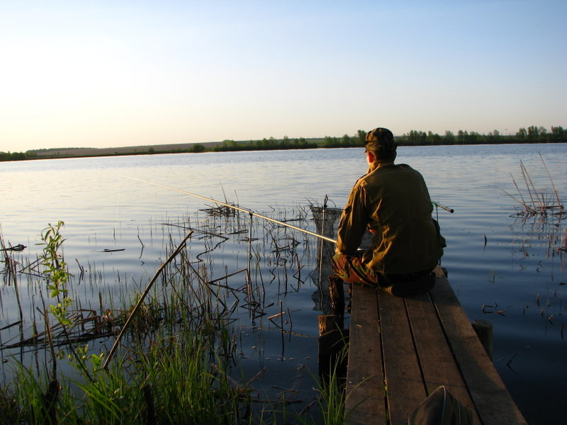
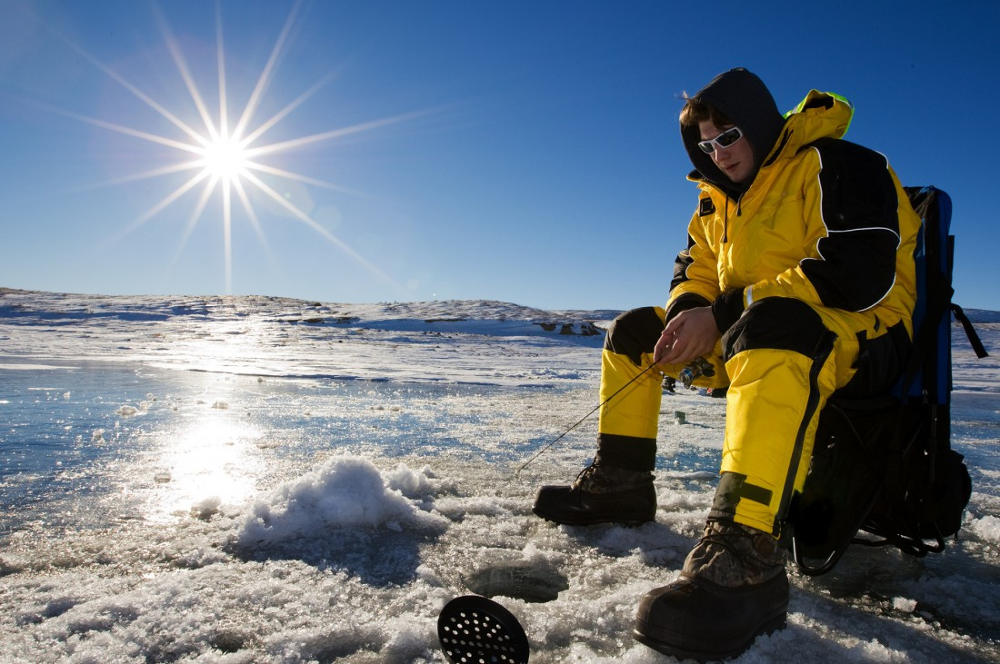

Летняя рыбалке
Зимняя рыбалка
 
Летняя рыбалка представляет возможность использовать любые снасти, т.к. в связи с окончанием весеннего нереста большинства рыб, ограничения на них сняты. Лето, прекрасная пора – это время отдыха под теплым солнышком на берегу реки или озера, и, конечно же, рыбалка.Интересная ловля происходит на переходе от весны к лету, а само лето, делящееся на три подсезона, начинается с зацветания шиповника. Первый летний подсезон — начало лета — знаменуют и другие сопутствующие явления — цветение калины и жасмина в садах, цветение ржи, василька и льнянки в поле, на воде — белой кувшинки. Тепла все больше, стоят самые длинные в году дни.К этому времени прогревается вода в больших водоемах — озерах и водохранилищах. Там после окончания весенних запретов начинается сезон ловли крупной хищной рыбы кружками и спиннингом, а леща — на прикормленных местах поплавочными и донными удочками. Порою хорошо клюет белый и красный (золотой) карась, причем нередко — в самую неподходящую, холодную и ненастную погоду.
Как только температура воздуха опустилась ниже нуля, и водоемы покрылись льдом, наступает пора ловли рыбы со льна или так называемая подледная рыбалка. Именно в этот период для рыбака открываются все просторы водоема с его секретными местами обитания рыбы.
Но не стоит забывать – что для безопасного нахождения на льду, его толщина должна быть не меньше 5 сантиметров. При перволедье не стоит сходиться в группы, поскольку лед еще не окреп, и Вы с друзьями можете провалиться.
Несомненна, зимняя ловля одна из самых экстремальных и увлекательных рыбалок. Многие рыбаки с приходом льда закрывают свой сезон рыбной ловли, но я не отношусь к таковым, и Вы тоже – поскольку зашли в эту тему.
Первым делом, зимний рыбак должен быть комфортно одет. А именно – одежда для зимней рыбалки должна согревать и не мешать рыбаку, ловить рыбу. Ну а на втором месте, как вы поняли, идет уже ваше снаряжение. Способов ловли зимой очень много.
Практически каждая рыба требует особых снастей и методов ловли. При ловле той или иной рыбы зимой нужно учитывать много факторов и особенностей, что бы быть всегда с уловом.